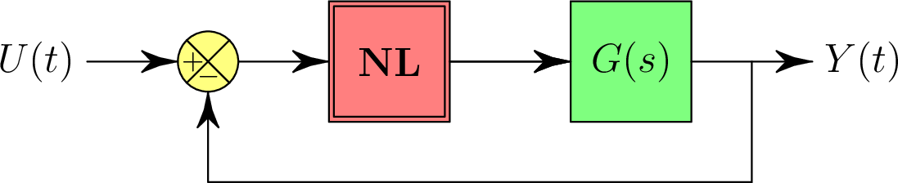

|
|
|
Ahmed MAIDI
Professeur

|
|
|
 
Département Automatique
Faculté de Génie Electrique et d'Informatique
Université Mouloud MAMMERI (UMMTO)
15 000 Tizi-Ouzou, Algérie (Algeria)
|
Systèmes non linéaires (Master Académique 1, Options : Automatique et Systèmes; Automatique et Informatique Industrielle)

Pré-requis
- Analyse réel.
- Modélisation mathématique.
- Asservissement linéaire.
Programme
- Chapitre 1 : Généralités sur les systèmes non linéaires.
- Chapitre 2 : Méthode du plan de phase.
- Chapitre 3 : Méthode du premier harmonique.
- Chapitre 4 : Théorie de la stabilié de Lyapunov.
- Chapitre 5 : Théorie de la passivité.
- Chapitre 6 : Elements de Géométrie différentielle.
- Chapitre 7 : Commande des systèmes non linéaires.
 Télécharger le cours.
Télécharger le cours.
Travaux dirigés
Télécharger la série d'exercices.
Travaux pratiques
- TP 1 : Etude des caractéristiques d'un système non linéaire.
- TP 2 : Etude d'un système non linéaire par la méthode du plan de phase.
- TP 3 : Etude d'un système non linéaire par la méthode du premier harmonique.
- TP 4 : Analyse de la stabilié par la théorie de Lyapunov.
- TP 5 : Analyse de la stabilié par théorie de la passivité.
Télécharger les textes des travaux pratiques.
Examens et solutions
Télécharger les examens et les solutions.
Documentation
Liste des ouvrages disponibles au niveau de la bibliothèque de
la Faculté de Génie Electrique et d'Informatique (Université Mouloud
MAMMERI de Tizi-Ouzou) :
Retour
Dernière modification : 20 avril 2020.